Çalıkuşu
Reşat Nuri Güntekin
120 TL
İncele
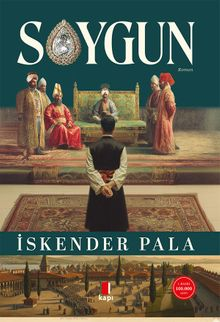
Soygun
İskender Pala
158 TL
İncele
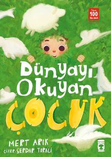
Dünyayı Okuyan Çocuk
Mert Arık
158 TL
İncele
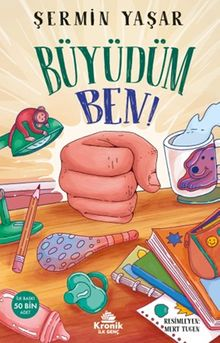
Büyüdüm Ben
Şermin Yaşar
157 TL
İncele
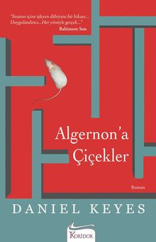
Alegernon'a Çiçekler
Daniel Keyes
145 TL
İncele
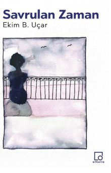
Savrulan Zaman
Ekim B. Uçar
200 TL
İncele
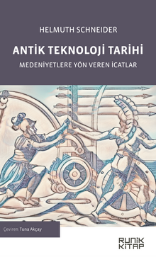
Antik Teknoloji Tarihi
Helmuth Schneider
80 TL
İncele

Siddhartha
Hermenn Hesse
250 TL
İncele
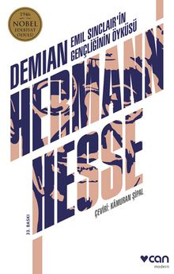
Demian
Hermann Hesse
184 TL
İncele
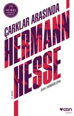
Çarklar Arasında
Hermann Hesse
48 TL
İncele
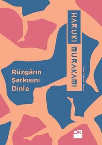
Rüzgarın Şarkısını Dinle
Haruki Murakami
185 TL
İncele

Jane Eyre
Charlotte Bronte
457 TL
İncele
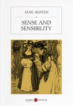
Sense and Sensibility
Jane Austen
418 TL
İncele
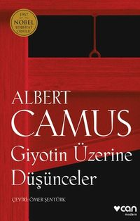
Giyotin Üzerine Düşünceler
Albert Camus
18 TL
İncele

Yabancı
Albert Camus
118 TL
İncele

Kırmızı Pazartesi
Gabriel Garcia Marquez
178 TL
İncele
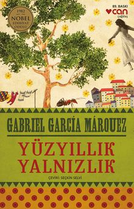
Yüzyıllık Yalnızlık
Gabriel Garcia Marquez
185 TL
İncele
Varolmanın Dayanılmaz Hafifliği
Milan Kundera
188 TL
İncele
Ölümsüzlük
Milan Kundera
148 TL
İncele
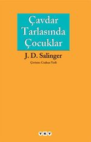
Çavdar Tarlasında Çocuklar
J. D. Salinger
258 TL
İncele
{kind=link}
{kind=link}
{kind=link}
{kind=link}
{kind=link}
{kind=link}
{kind=link}
{kind=link}
{kind=link}
{kind=link}
{kind=link}
{kind=link}
 ve duygunun (Marianne) çatışmasını, 19. yüzyıl İngiltere'sinin toplumsal kuralları ve aşk çıkmazları eşliğinde işleyen bir klasik.){kind=link}
{kind=link}
{kind=link}
{kind=link}
{kind=link}
{kind=link}
{kind=link}
{kind=link}